01
Fisherman's Village
A lovely place to spend the evening on Samui, with restaurants, shopping and plenty to wander around and discover.

THE EXPERIENCE
There is something rather special about travelling between the islands in the Gulf of Thailand. We managed to experience three on this trip — Koh Samui, Koh Phangan and Koh Tao — and each offered something quite different.
We began in the north of Koh Samui, where a quiet beachfront hotel gave us a lovely base for exploring the island by car. From there, Koh Phangan became an adventure of boats, beaches and sunsets, before finishing in Koh Tao, where the pace slowed down once again.
Looking back, it was the contrast between the three islands that made the trip work so well. We wouldn't have wanted to choose just one.
WHERE WE STAYED
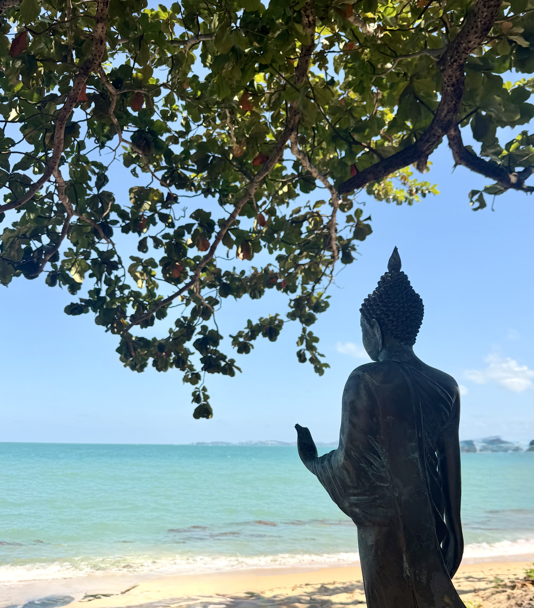
KOH SAMUI
We stayed in the north of Samui at Sarei Samui, and it turned out to be a lovely choice. The setting was peaceful, with the hotel sitting directly on a beautiful, quiet beach.
The pool was great, but one of our favourite parts of the stay was breakfast at the beachfront restaurant. It was a lovely way to start the day before heading out to explore the island.
The north worked particularly well as a base. It gave us the quieter side of Samui while keeping the rest of the island within easy reach by car.
KOH PHANGAN
Our base on Koh Phangan was Varivana. This was the island where we spent much of our time exploring, getting out on the water and discovering different stretches of coastline.
Koh Phangan is a superb island to explore. We found that arranging transport every day could become eye-wateringly expensive, so getting out by boat became a much more enjoyable way to discover the island.
KOH TAO
We finished the trip at The Heritage Hideaway on Koh Tao. After the exploring and boat adventures of the previous islands, this was a lovely place to settle into a slower rhythm.
Koh Tao was all about taking things a little easier, wandering the streets, spending time on the beaches and enjoying some well-earned downtime.
01 — KOH SAMUI

OUR FIRST STOP
The north of Koh Samui was exactly what we wanted at the start of the trip. Peaceful, relaxed and right on the beach, it gave us a chance to settle in before exploring further afield.
We hired a car and loved having the freedom to explore at our own pace. It made discovering different parts of the island easy, with no need to plan every stop in advance.
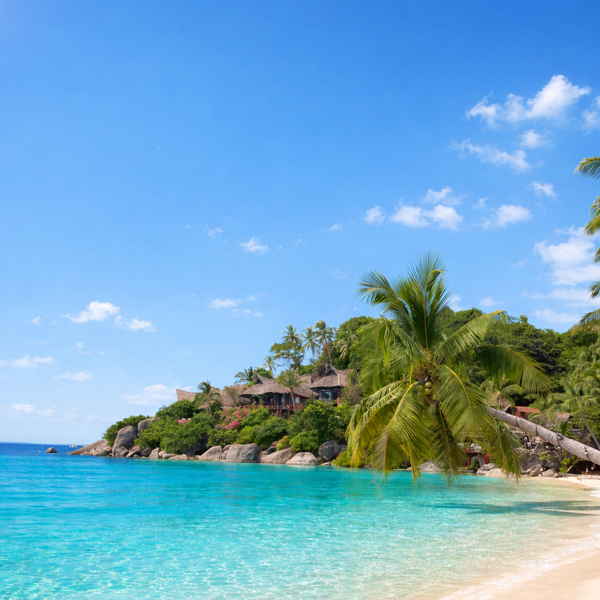
ISLAND EXPLORING
We enjoyed getting out and seeing more of Samui. Having the car meant we could explore different beaches and corners of the island without having to think too much about getting around.

A QUIETER MOMENT
Some of the nicest moments were simply finding a quiet stretch of beach and enjoying the slower pace of island life.

AROUND THE ISLAND
Samui is a good island to explore without rushing. We enjoyed the freedom of being able to head off for the day and see where the road took us.
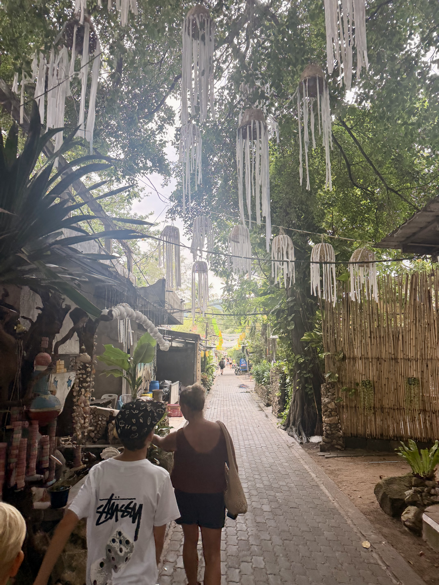
EVENINGS
In the evenings we loved heading to Fisherman's Village. It was a great place to spend time eating, wandering around the shops and enjoying a different side of Samui after a day exploring.
02 — KOH PHANGAN
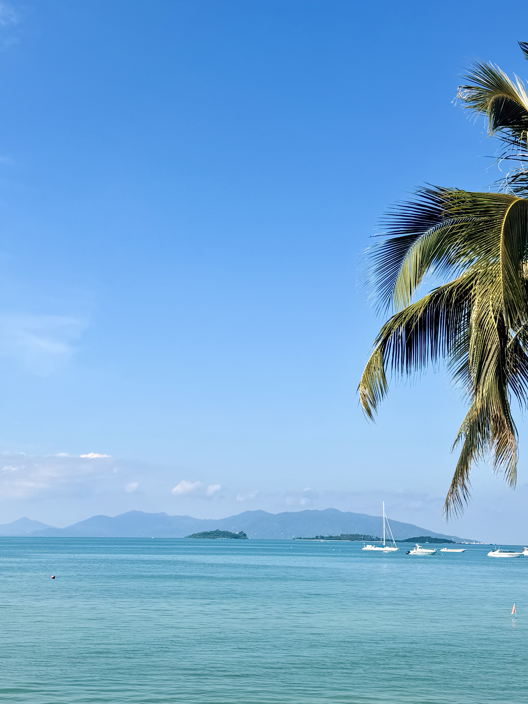
EXPLORING BY BOAT
Koh Phangan was probably the island we enjoyed exploring most. The coastline is beautiful, and getting around by boat allowed us to discover beaches that would otherwise have been much harder to reach.
Taxis were eye-wateringly expensive every day, so exploring by boat made a lot of sense. More importantly, it was great fun.

THE COASTLINE
We loved simply bounding around the coast, stopping at different beaches and seeing what each one had to offer. It was one of those days where the journey was just as enjoyable as the destinations.
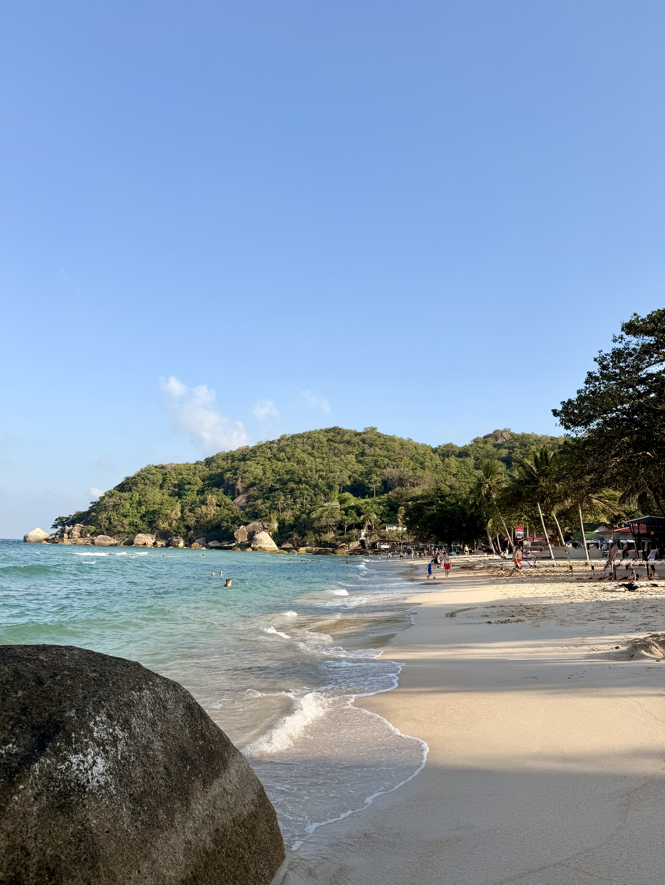
BOTTLE BEACH
Bottle Beach was one of the highlights. It is exactly the sort of place that makes exploring the island worthwhile.

SECRET BEACH
Secret Beach was another favourite. Discovering these different stretches of coastline was a big part of what made Koh Phangan so enjoyable.

MA ISLAND
We also took a boat over to Ma Island. It was a fun day exploring another beautiful part of the coastline and enjoying everything that makes this island group so appealing.

AMSTERDAM BAR
We found Amsterdam Bar and all agreed that it was possibly the best sunset bar in the world.
The atmosphere, the music and the view as the sun went down made it one of those places that stays with you long after the trip has finished.
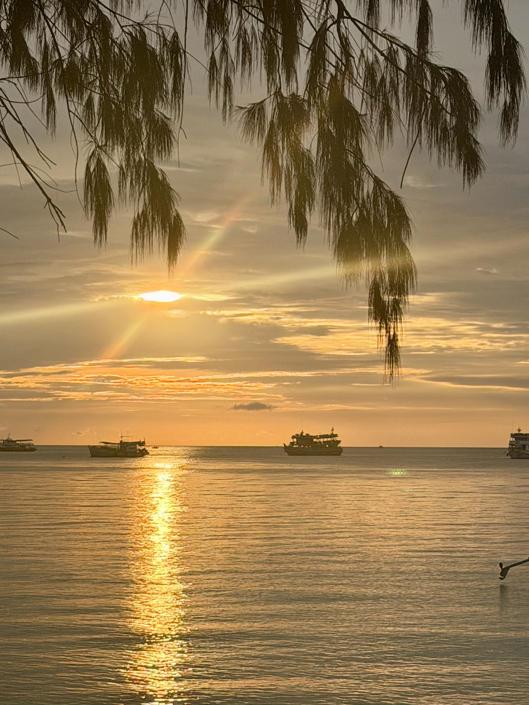
THE SUNSET
There is something about watching the sun disappear over the water in the islands. Amsterdam Bar gave us the perfect setting to enjoy it.
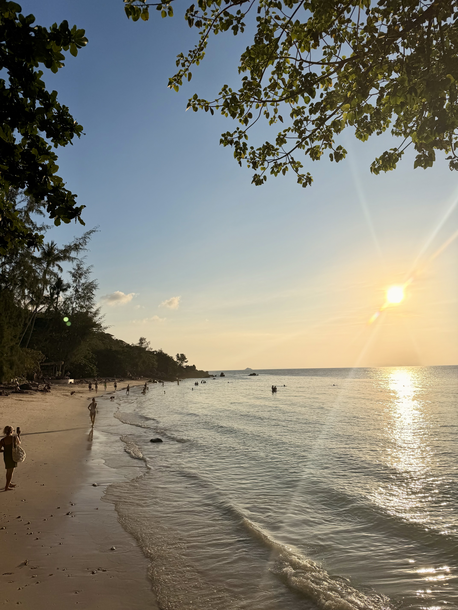
DINNER
For dinner, Alcove was another great find. It was a lovely spot to spend an evening after a day exploring the island.
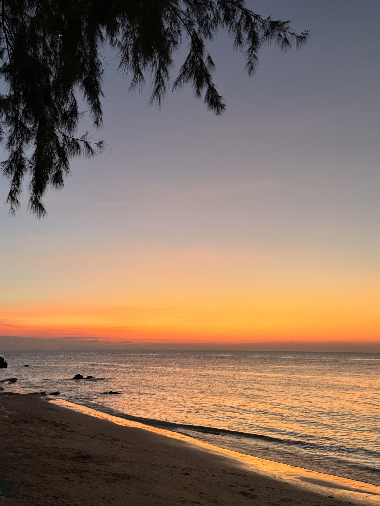
ISLAND EVENINGS
Boat trips, quiet beaches, good food and sunsets. Koh Phangan gave us some of the most memorable moments of the trip.
03 — KOH TAO

KOH TAO
By the time we reached Koh Tao, we were ready for a slightly slower pace. We enjoyed walking around the cobbled streets, discovering the island and spending time relaxing on the beaches.
It felt like a different world again, with a much more laid-back atmosphere and plenty of time to simply enjoy being there.
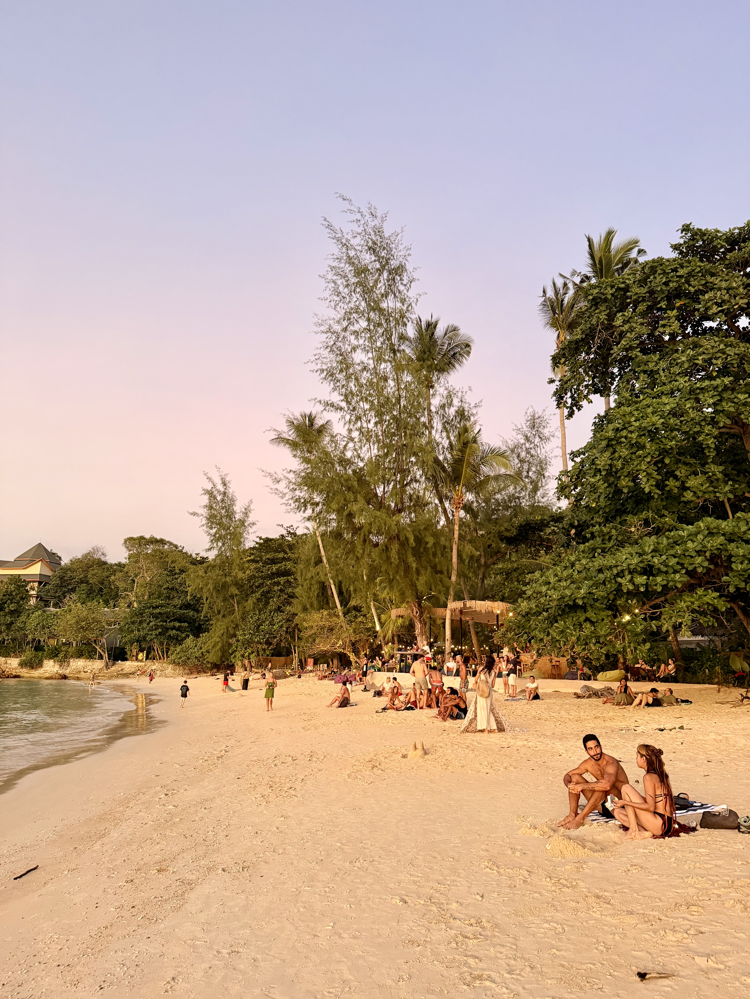
BEACH DAYS
We spent time relaxing on the beaches and enjoying the slower life. After all the exploring on Samui and Phangan, it was a lovely way to finish the trip.
THE FINAL CHAPTER
Koh Tao brought the pace right down. We enjoyed the beaches, the streets and the chance to relax before heading home.
THE THINGS WE LEARNED
KOH SAMUI
We loved the peaceful feel of the north. Having a car made exploring the island straightforward, and Fisherman's Village was a great place to spend the evenings.
KOH PHANGAN
The beaches were a huge highlight. We found exploring by boat a much more enjoyable way to get around than relying on expensive taxis.
KOH TAO
Koh Tao was a lovely place to slow down. Enjoy the beaches, wander around the streets and take the opportunity to relax.
OUR RECOMMENDATIONS
01
A lovely place to spend the evening on Samui, with restaurants, shopping and plenty to wander around and discover.
02
One of our favourite beaches on Koh Phangan. Worth making the effort to explore.
03
Another highlight of exploring the Koh Phangan coastline.
04
A fun boat trip and a great way to spend a day exploring the surrounding coastline.
05
A truly memorable sunset spot. Great music, a wonderful atmosphere and a view that made it one of the highlights of the whole trip.
06
A great place for dinner on Koh Phangan and one we were very happy to discover.
07
An easy and enjoyable way to round off a day exploring Samui.
08
Come here to slow down, enjoy the beaches and take in the island's laid-back atmosphere.
MORE FROM OUR CAMERA
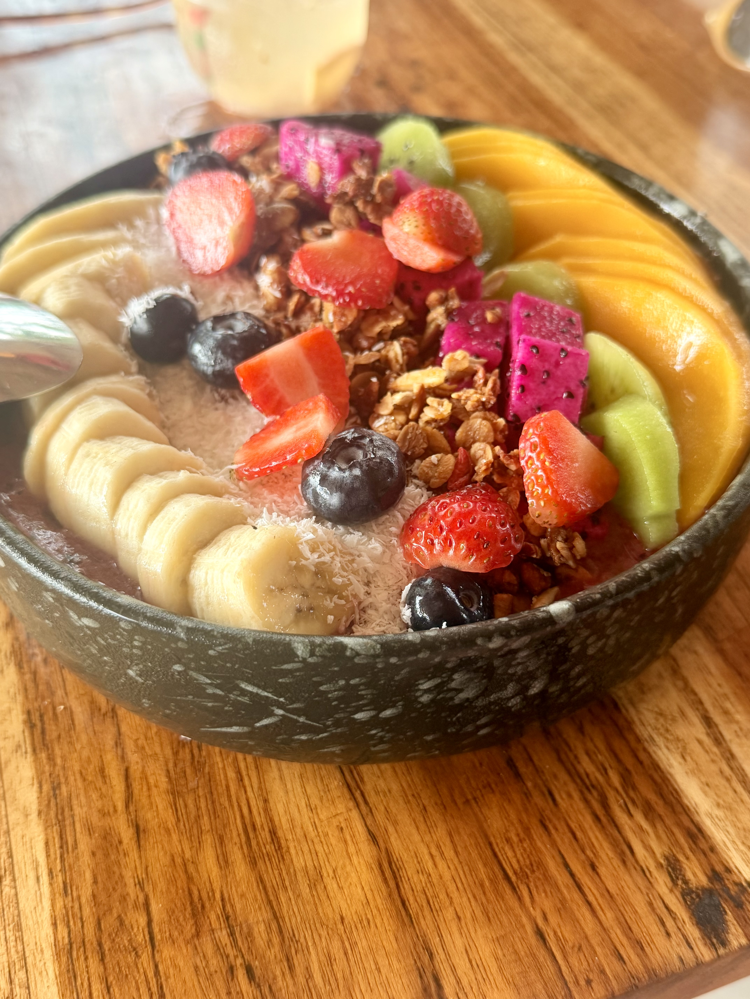


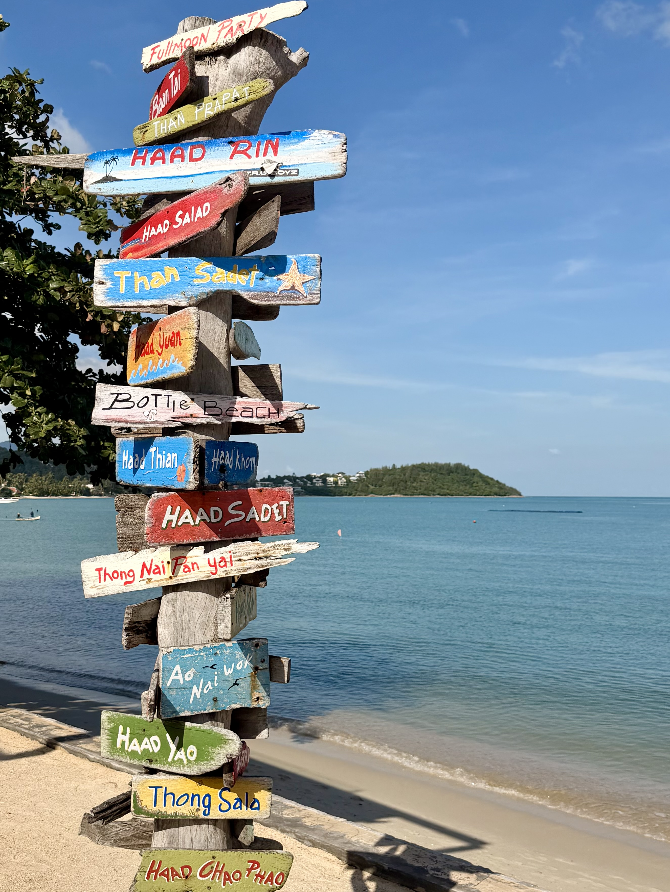
OUR EDIT
If we were planning this trip again, we wouldn't change the idea of visiting all three islands.
Samui gave us the peaceful beachfront base and the freedom to explore by car. Koh Phangan brought the adventure: boats, hidden beaches, Ma Island and that extraordinary sunset at Amsterdam Bar.
Then Koh Tao gave us the chance to slow everything down, wander the streets and enjoy some time on the beach.
Three islands, each with its own personality. Together, they made a wonderful trip.
OUR MAP
Koh Samui, Koh Phangan and Koh Tao. Three islands in the Gulf of Thailand, each offering something different — from quiet beaches and boat adventures to great sunsets and a slower way of life.